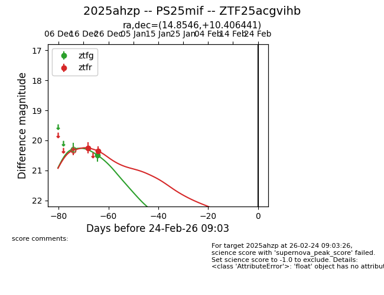
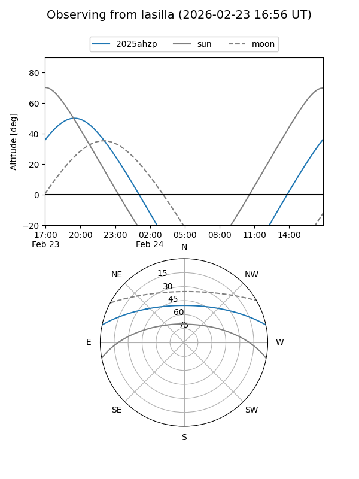
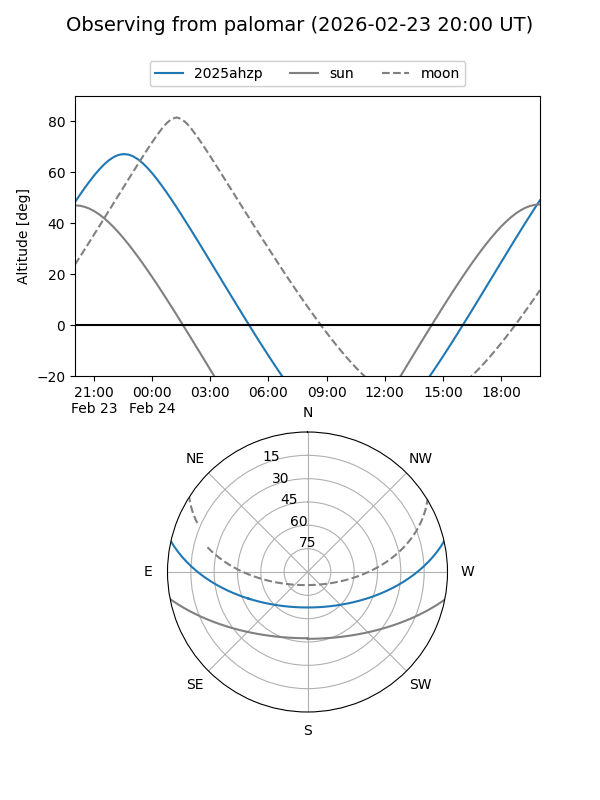
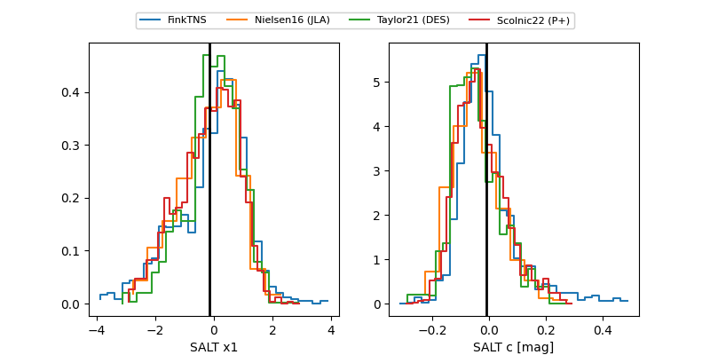

2025ahzp
Target 2025ahzp at 2025-12-22 21:01
Aliases and brokers:
FINK: fink-portal.org/ZTF25acgvihb
Lasair: lasair-ztf.lsst.ac.uk/objects/ZTF25acgvihb
ALeRCE: alerce.online/object/ZTF25acgvihb
TNS: wis-tns.org/object/2025ahzp
YSE: ziggy.ucolick.org/yse/transient_detail/2025ahzp
alt names
ZTF25acgvihb (ztf,fink_ztf)
2025ahzp (tns,yse)
Coordinates:
equatorial (ra, dec) = 14.8546,+10.40644
equatorial (HMS+DMS) = 00:59:25.10,+10:24:23.19
galactic (l, b) = (126.1502,-52.41543)
Flags:
Photometry:
last ztfg=20.50, ztfr=20.35
1 ztfg, 2 ztfr detections
Lightcurve

Visibility


Additional plots
